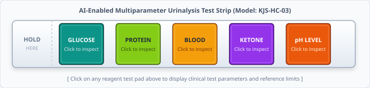

Interactive Urine Test Strip (Image Map)
Urine test strips contain chemical reagent pads that change color when dipped into urine. Click on any of the five reagent pads (Glucose Pad, Protein Pad, Blood Pad, Ketone Pad, or pH Pad) below to inspect its testing principle and reference values:

Test Strip Reagent Pad Clinical Details
1. Glucose Pad
Test Parameter: Urinary Glucose (Glycosuria)
Chemical Reaction: Glucose Oxidase – Peroxidase enzymatic chromogen reaction.
Normal Range: Negative (< 15 mg/dL)
Clinical Significance: Used for screening diabetes mellitus and renal glycosuria.
2. Protein Pad
Test Parameter: Urinary Protein / Albumin (Proteinuria)
Chemical Reaction: Protein-error-of-indicators with tetrabromphenol blue.
Normal Range: Negative to Trace (< 10 mg/dL)
Clinical Significance: Early biomarker for renal disease, nephritis, and hypertensive kidney damage.
3. Blood Pad
Test Parameter: Occult Blood / Free Hemoglobin (Hematuria)
Chemical Reaction: Pseudoperoxidase activity of hemoglobin oxidizing tetramethylbenzidine.
Normal Range: Negative (0 – 3 RBCs/HPF)
Clinical Significance: Indicates urinary tract infection, kidney stones, trauma, or glomerulonephritis.
4. Ketone Pad
Test Parameter: Ketone Bodies / Acetoacetic Acid (Ketonuria)
Chemical Reaction: Legal's test with sodium nitroprusside in alkaline buffer.
Normal Range: Negative (< 5 mg/dL)
Clinical Significance: Critical marker for diabetic ketoacidosis (DKA), prolonged fasting, or starvation.
5. pH Pad
Test Parameter: Urinary pH (Acid-Base Balance)
Chemical Reaction: Dual indicator system (Methyl Red and Bromothymol Blue).
Normal Range: 4.5 – 8.0 (Normal average is approximately 6.0)
Clinical Significance: Evaluates kidney tubular acidosis, systemic acid-base balance, and kidney stone risk.